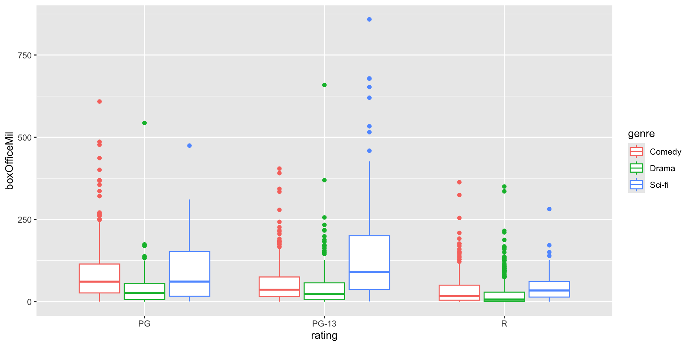
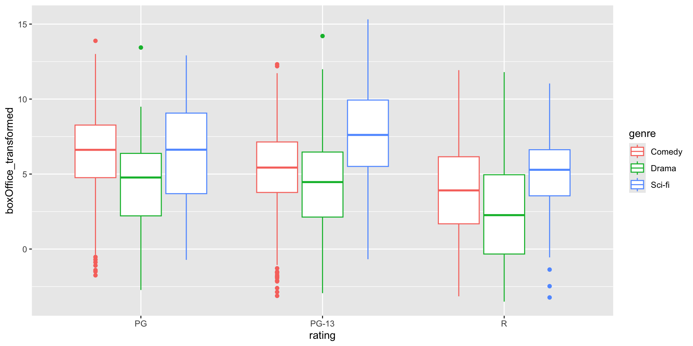
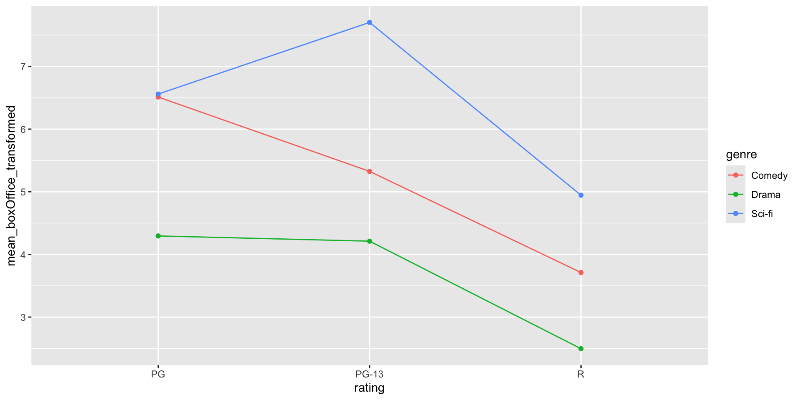

Rotten Tomatoes Data
IVs: Genre (Comedy vs. Drama vs. Sci-Fi) and Rating (PG vs. PG-13 vs. R)
DV: Box office revenue in millions of US dollars
id title audienceScore tomatoMeter
Length :1910 Length :1910 Min. :12.00 Min. : 0.00
N.unique :1910 N.unique :1906 1st Qu.:47.00 1st Qu.:29.00
N.blank : 0 N.blank : 0 Median :63.00 Median :52.00
Min.nchar: 2 Min.nchar: 2 Mean :61.92 Mean :51.74
Max.nchar: 70 Max.nchar: 83 3rd Qu.:78.00 3rd Qu.:75.00
Max. :99.00 Max. :98.00
rating ratingContents releaseDateTheaters releaseDateStreaming
Length :1910 Length :1910 Min. :1980-05-21 Min. :1992-06-02
N.unique : 5 N.unique :1508 1st Qu.:2002-09-20 1st Qu.:2004-08-11
N.blank : 0 N.blank : 0 Median :2006-09-29 Median :2007-11-27
Min.nchar: 1 Min.nchar: 10 Mean :2008-01-30 Mean :2009-07-06
Max.nchar: 5 Max.nchar: 141 3rd Qu.:2013-11-01 3rd Qu.:2014-08-26
Max. :2023-02-03 Max. :2023-03-28
runtimeMinutes genre originalLanguage director
Min. : 74 Length :1910 Length :1910 Length :1910
1st Qu.: 95 N.unique : 3 N.unique : 1 N.unique :1121
Median :106 N.blank : 0 N.blank : 0 N.blank : 0
Mean :109 Min.nchar: 5 Min.nchar: 7 Min.nchar: 3
3rd Qu.:119 Max.nchar: 6 Max.nchar: 7 Max.nchar: 176
Max. :223
writer boxOffice distributor soundMix
Length :1910 Length :1910 Length :1910 Length :1910
N.unique :1675 N.unique :1160 N.unique : 241 N.unique : 266
N.blank : 0 N.blank : 0 N.blank : 0 N.blank : 0
Min.nchar: 7 Min.nchar: 4 Min.nchar: 3 Min.nchar: 4
Max.nchar: 145 Max.nchar: 7 Max.nchar: 156 Max.nchar: 85
boxOfficeMil
Min. : 0.0014
1st Qu.: 5.7000
Median : 26.0500
Mean : 53.2256
3rd Qu.: 65.2250
Max. :858.4000
NAs :2 The DV of box office revenue (boxOfficeMil) is missing for two movies, so we will remove these from the data set:
We also want to omit movies without the PG, PG-13, or R ratings:
Check for a balanced design (equal sample sizes for each combination of groups):
Let’s first explore the distribution of these data using box plots:

We see (as we might have anticipated), a large number of positive outliers. This is an instance in which we might prefer to analyze a transformed outcome variable. This time, we’ll use the Box-Cox transformation from Lecture 1.
Estimated transformation parameter
dat$boxOfficeMil
0.2164347 With this transformation, we lose the ability to easily interpret the metric of the DV in favor of better meeting our test assumptions.
Be sure to always apply the exact same transformation to all values (no group-level transformations!)

Now, we still have a few outliers, but our data should better meet the normality assumption with the transformed data.
The easiest way to make an interaction plot with ggplot is to create a new data set that includes group means.
Then, we can use this to draw an interaction plot.

Earlier, we saw the DV ~ IV notation for formulas.
We can also use DV ~ IV1 * IV2 to include both main effects and an interaction.
A longer way to write the same formula is DV ~ IV1 + IV2 + IV1:IV2.
The formula DV ~ IV1:IV2 includes only the interaction, not the main effects.
The “*” notation implies all lower-order terms, and the “:” notation implies only the interaction effect.
aovWarning: Don’t try this at home if you have unbalanced data!
Df Sum Sq Mean Sq F value Pr(>F)
rating 2 2997 1498.7 153.65 < 2e-16 ***
genre 2 1700 849.8 87.12 < 2e-16 ***
rating:genre 4 140 35.0 3.59 0.00636 **
Residuals 1895 18484 9.8
---
Signif. codes: 0 '***' 0.001 '**' 0.01 '*' 0.05 '.' 0.1 ' ' 1 Df Sum Sq Mean Sq F value Pr(>F)
genre 2 2938 1469.0 150.60 < 2e-16 ***
rating 2 1759 879.5 90.17 < 2e-16 ***
genre:rating 4 140 35.0 3.59 0.00636 **
Residuals 1895 18484 9.8
---
Signif. codes: 0 '***' 0.001 '**' 0.01 '*' 0.05 '.' 0.1 ' ' 1ezANOVAezANOVA in the ez package allows us to choose the sums of squares type. Here, we’ll use type 3 SS since we are interested in a potential interaction effect.
$ANOVA
Effect DFn DFd F p p<.05 ges
2 genre 2 1895 53.005050 3.990588e-23 * 0.052978294
3 rating 2 1895 49.027459 1.738707e-21 * 0.049198302
4 genre:rating 4 1895 3.590136 6.357627e-03 * 0.007521127
$`Levene's Test for Homogeneity of Variance`
DFn DFd SSn SSd F p p<.05
1 8 1895 145.7517 6494.937 5.315667 1.284892e-06 *ezANOVAWe rejected the null hypothesis for Levene’s test, so we should use a correction for violations of homogeneity of variance. One option is to use White’s adjustment, which is available with ezANOVA.
$ANOVA
Effect DFn DFd F p p<.05
2 genre 2 1895 49.078462 1.656404e-21 *
3 rating 2 1895 49.370951 1.254334e-21 *
4 genre:rating 4 1895 3.370623 9.307024e-03 *
$`Levene's Test for Homogeneity of Variance`
DFn DFd SSn SSd F p p<.05
1 8 1895 145.7517 6494.937 5.315667 1.284892e-06 *aovAnother option if homogeneity is violated is to use weighted least squares. We can calculate and specify weights with the aov function.
Calculate weights for each combination of groups:
Run WLS ANOVA:
Because we have unbalanced data, we want to print type 2 or 3 sums of squares. Below, we find type 2 sums of squares using the Anova function from the car package. Note that we do not want to use this function to find type 3 sums of squares (use ezAnova instead).
Anova Table (Type II tests)
Response: boxOffice_transformed
Sum Sq Df F value Pr(>F)
genre 171.39 2 85.6965 < 2.2e-16 ***
rating 176.94 2 88.4680 < 2.2e-16 ***
genre:rating 13.76 4 3.4407 0.008243 **
Residuals 1895.00 1895
---
Signif. codes: 0 '***' 0.001 '**' 0.01 '*' 0.05 '.' 0.1 ' ' 1Now that we have more effects in our ANOVA model, calculating effect size becomes more nuanced. Partial effect sizes enter the picture.
In practice, the numerator of the formula remains the same, but the denominator is always smaller for partial measures of effect sizes. This means that partial measures are always larger than their counterparts.
The sjstats package includes the anova_stats function for calculating \(r\)-family effect sizes. This is especially useful when you have multiple main effects and interaction effects:
etasq | partial.etasq | omegasq | partial.omegasq | epsilonsq | cohens.f
------------------------------------------------------------------------
0.124 | 0.135 | 0.123 | 0.134 | 0.123 | 0.395
0.074 | 0.085 | 0.073 | 0.084 | 0.073 | 0.306
0.006 | 0.007 | 0.004 | 0.005 | 0.004 | 0.085
| | | | |
etasq | term | sumsq | df | meansq | statistic | p.value | power
------------------------------------------------------------------------------
0.124 | genre | 295.737 | 2 | 147.869 | 147.869 | < .001 | 1.000
0.074 | rating | 176.936 | 2 | 88.468 | 88.468 | < .001 | 1.000
0.006 | genre:rating | 13.763 | 4 | 3.441 | 3.441 | 0.008 | 0.860
| Residuals | 1895.000 | 1895 | 1.000 | | | For the interaction effect, \(\eta^2 = .006\), partial \(\eta^2 = .007\), \(\omega^2 = .004\), and partial \(\omega^2 = .005\).
We found that the interaction effect is statistically significant at \(\alpha = .05\). To better understand what this result means, let’s calculate simple main effects. You should always do this whenever an interaction in your model is significant. (If the interaction is not significant, look at the ordinary main effects in the ANOVA table instead.)
Let’s split the data by the three ratings, then look at the effects of genre on box office revenue within each rating category.
Next, we want the \(MSW\) and \(dfW\) from the original model. From before, \(MSW = 9.8\) and \(dfW = 1895\). (Note that the type of SS doesn’t affect these numbers.)
Next, conduct a one-way ANOVA for each sub-data set.
Df Sum Sq Mean Sq F value Pr(>F)
genre 2 295.3 147.64 16.07 2.22e-07 ***
Residuals 323 2967.1 9.19
---
Signif. codes: 0 '***' 0.001 '**' 0.01 '*' 0.05 '.' 0.1 ' ' 1 Df Sum Sq Mean Sq F value Pr(>F)
genre 2 1104 552.1 62.92 <2e-16 ***
Residuals 748 6563 8.8
---
Signif. codes: 0 '***' 0.001 '**' 0.01 '*' 0.05 '.' 0.1 ' ' 1 Df Sum Sq Mean Sq F value Pr(>F)
genre 2 440 220.13 20.26 2.58e-09 ***
Residuals 824 8955 10.87
---
Signif. codes: 0 '***' 0.001 '**' 0.01 '*' 0.05 '.' 0.1 ' ' 1For the PG rated movies, \(MSB = 147.64\) and \(dfB = 2\).
For the PG-13 rated movies, \(MSB = 552.1\) and \(dfB = 2\).
For the R rated movies, \(MSB = 220.13\) and \(dfB = 2\).
The \(F\) test statistic equals \(MSB/MSW\), where \(MSB\) is from the sub-data sets, and \(MSW\) is from the original ANOVA.
To find \(p\)-values, find the proportion of the \(F\) distribution above each \(F\) test statistic. Be sure to use \(dfB\) from the sub-dataset and \(dfW\) from the original dataset.
[1] 3.226199e-07[1] 1.710162e-24[1] 2.283538e-10At \(\alpha = .05\), there are significant differences in genre at all three rating categories.
joint_tests()An easier way to do these tests imply is to use the joint_tests() function from the emmeans package. First we define an object using the emmeans() function with both grouping variables under specs
# simple main effects calculation with the aov class results
em1 <- emmeans(aov_res, specs = c("genre","rating"))
# simple main effects calculation from the ezANOVA output
ez_res <- ezANOVA(data = dat, dv = boxOffice_transformed,
between = c(genre, rating), wid = id,
type = 3, white.adjust = TRUE, return_aov = TRUE)
emmeans(ez_res$aov, specs = "rating") rating emmean SE df lower.CL upper.CL
PG 5.79 0.275 1895 5.25 6.33
PG-13 5.75 0.123 1895 5.51 5.99
R 3.72 0.172 1895 3.38 4.05
Results are averaged over the levels of: genre
Confidence level used: 0.95 Then we can use joint_tests() to test whether the effect of rating is significant by the different levels of `rating``
rating = PG:
model term df1 df2 F.ratio p.value
genre 2 1895 15.135 <0.0001
rating = PG-13:
model term df1 df2 F.ratio p.value
genre 2 1895 56.598 <0.0001
rating = R:
model term df1 df2 F.ratio p.value
genre 2 1895 22.568 <0.0001The problem with this approach is we get much less detail in the output, some of which we need to compute effect sizes.
If there are 3 or more levels of the IV for simple effects, we can do post-hoc or a priori analyses like we learned about for the one-way ANOVA. For example, we can do Tukey’s HSD for each rating separately.
rating = PG:
contrast estimate SE df t.ratio p.value
Comedy - Drama 2.2173 0.408 1895 5.438 <0.0001
Comedy - (Sci-fi) -0.0472 0.746 1895 -0.063 0.9978
Drama - (Sci-fi) -2.2645 0.798 1895 -2.838 0.0128
rating = PG-13:
contrast estimate SE df t.ratio p.value
Comedy - Drama 1.1140 0.252 1895 4.419 <0.0001
Comedy - (Sci-fi) -2.3774 0.320 1895 -7.424 <0.0001
Drama - (Sci-fi) -3.4914 0.328 1895 -10.639 <0.0001
rating = R:
contrast estimate SE df t.ratio p.value
Comedy - Drama 1.2152 0.234 1895 5.185 <0.0001
Comedy - (Sci-fi) -1.2339 0.498 1895 -2.479 0.0354
Drama - (Sci-fi) -2.4492 0.481 1895 -5.093 <0.0001
P value adjustment: tukey method for comparing a family of 3 estimates All pairwise comparisons are statistically significant except for comedy and sci-fi movies with a PG rating.
We can use the equations from lecture and R as a calculator to find effect sizes for the simple main effect of genre separately for each rating category.
\[Partial\ \eta^2_{simple} = \frac{SSB_{simple}}{SSB_{simple} + SSW}\] \[\eta^2_{simple} = \frac{SSB_{simple}}{SST}\]
\[Partial\ \omega^2_{simple} = \frac{dfB(MSB_{simple} - MSW)}{SSB_{simple} + (N - dfB)MSW}\] \[\omega^2_{simple} = \frac{dfB(MSB_{simple} - MSW)}{SST + MSW}\]
Df Sum Sq Mean Sq F value Pr(>F)
genre 2 295.3 147.64 16.07 2.22e-07 ***
Residuals 323 2967.1 9.19
---
Signif. codes: 0 '***' 0.001 '**' 0.01 '*' 0.05 '.' 0.1 ' ' 1\(N = 326\), \(SS_{simple} = 295.3\), \(MS_{simple} = 147.64\) and \(df_{simple} = 2\) from the sub-data set.
Df Sum Sq Mean Sq F value Pr(>F)
genre 2 2938 1469.0 150.60 < 2e-16 ***
rating 2 1759 879.5 90.17 < 2e-16 ***
genre:rating 4 140 35.0 3.59 0.00636 **
Residuals 1895 18484 9.8
---
Signif. codes: 0 '***' 0.001 '**' 0.01 '*' 0.05 '.' 0.1 ' ' 1\(SS_{W} = 18484\), \(df_{W} = 1895\), \(MS_{W} = 9.8\), and \(SS_{T} = 2938 + 1759 + 140 + 18484 = 23321\)